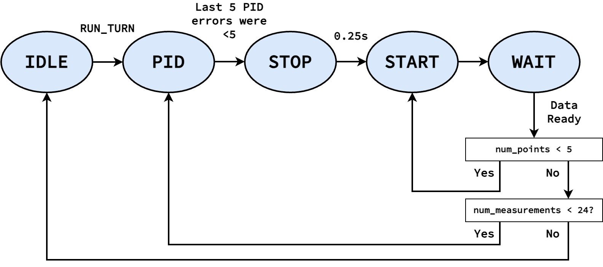

Lab 12: Path Planning and Execution
{kind=link}
This lab involves the synthesis of all the previous components in order to traverse a given path around the lab, involving:
Localizing where we are in the map (Lab 9: Mapping & Lab 11: Localization (Real))
Moving to the next waypoint in the path, involving turning (Lab 5: PID Control) and rotating (Lab 6: Orientation Control) using a PID controller and position estimates (Lab 7: Kalman Filtering)
State Machine
To solve this problem, I chose to:
Localize first
Send the distance data to Python (to localize)
Receive the estimated pose and the target (expressed as a turn angle and translation distance)
Use PID to first turn, then translate to the target waypoint
Repeat for all remaining waypoints
Localization
Localizing after each step will significantly reduce our speed; however, it will increase the effective number of update steps in our Bayes filter, improving our accuracy in pose estimation and moving as close as possible to each waypoint
This is implemented as a state machine on the Artemis:
{kind=link}
